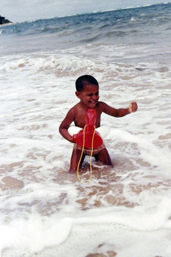
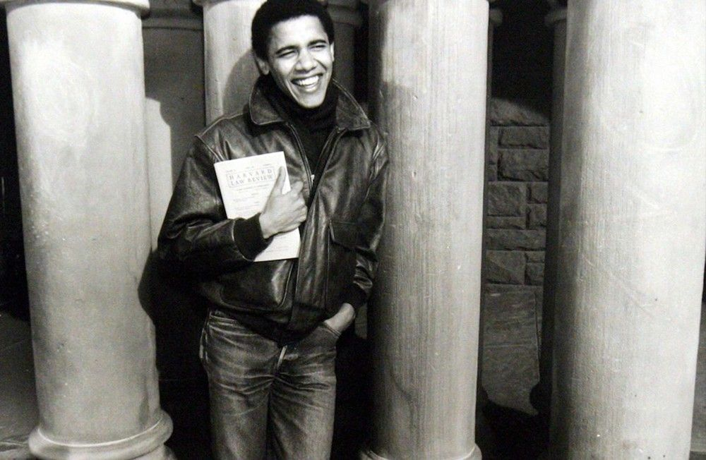

BARACK OBAMA : LA LEGENDE D'UN REVE, LA REALITE D'UN MONDE
I. Une figure exceptionnelle : un destin personnel hors du commun
A. Origines et jeunesse
Né le 4 août 1961 à Honolulu, Hawaï, Barack Obama grandit entre deux cultures, deux continents, et des trajectoires familiales contrastées. Son père, Barack Obama Sr., est un économiste originaire du Kenya, brillant mais absent, tandis que sa mère, Stanley Ann Dunham, est une anthropologue américaine idéaliste, profondément marquée par les questions de justice et d'éducation. Le couple se sépare alors qu'Obama n'a que deux ans, et c'est dans un cadre familial recomposé que l'enfant va forger ses premières impressions du monde. En 1967, sa mère épouse un Indonésien, Lolo Soetoro, et la famille s'installe à Jakarta. Barack vit plusieurs années dans un environnement instable mais formateur, confronté à la pauvreté, à la diversité religieuse, et à des réalités sociales bien différentes de celles de l'Amérique. À l'âge de dix ans, sa mère décide de le renvoyer à Honolulu, estimant que son avenir passe par une éducation rigoureuse. Il est alors accueilli par ses grands-parents maternels et intègre la prestigieuse Punahou School, où il étudie jusqu'à l'obtention de son diplôme en 1979. Cette double immersion, entre les rues animées de Jakarta et les campus feutrés d'Hawaï, façonne en lui une identité complexe, curieuse et résolument tournée vers l'autre. Elle lui permet d'acquérir une grande capacité d'adaptation, une compréhension fine des différences culturelles, et une sensibilité profonde aux inégalités qui traversent les sociétés modernes.

Obama enfant
B. Une trajectoire inspirante
Après avoir obtenu son diplôme en sciences politiques à l'Université Columbia en 1983, Barack Obama débute sa carrière à New York avant de rejoindre Chicago en 1985, animé par un fort désir de justice sociale. Pendant trois ans, il travaille comme organisateur communautaire pour le Developing Communities Project, contribuant à des initiatives locales destinées à améliorer les conditions de vie dans les quartiers pauvres du South Side. Conscient des limites de son action, il intègre la Harvard Law School en 1988 et devient, en 1990, le premier Afro-Américain à présider la Harvard Law Review. Diplômé en 1991, il retourne à Chicago, enseigne le droit constitutionnel à l’université et s’engage dans la vie politique locale. Élu sénateur de l'Illinois en 1996, il gagne en influence en défendant des réformes sur la santé et l'éthique. En 2004, son discours lors de la Convention démocrate le révèle au grand public, préparant le terrain pour une ascension rapide vers la présidence. En 2008, il entre dans l'histoire en devenant le premier président afro-américain des États-Unis, symbole d'espoir et de changement pour une nation en quête de renouveau.

Obama en tant qu'organisateur communautaire à Chicago
C. Des inspirations et des influences importantes
Barack Obama a été profondément influencé par des figures emblématiques comme Martin Luther King Jr. et Abraham Lincoln. Il a souvent invoqué le rêve américain, cette conviction que chacun, quelle que soit son origine, peut réussir grâce à l'effort et à la détermination. Inspiré par King, il a fait de l'égalité raciale et de l'unité des piliers de son engagement politique, prônant une Amérique où les individus sont jugés sur leur caractère, non sur leur couleur de peau. Son admiration pour Lincoln est également marquante : en annonçant sa candidature présidentielle sur les marches de l'Old State Capitol à Springfield, il rend hommage à l'héritage d'unité et de dépassement des divisions partisanes. À travers son parcours personnel et politique, Obama incarne une vision du leadership ancrée dans la diversité, l'inclusion et la justice, fidèle aux grandes aspirations de l'histoire américaine.